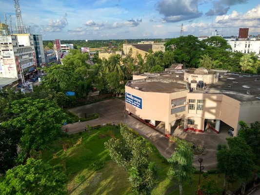

Khulna
About Khulna
Khulna District (Bengali: খুলনা জেলা, Khulna Jela also Khulna Zila) is a district of Bangladesh. It is located in the Khulna Division. It is bordered on the north by the Jessore District and the Narail District, on the south by the Bay of Bengal, on the east by the Bagerhat District, and on the west by the Satkhira District.[1]
Sixty dome Mosque Bagherhaat
In the middle of the 15th century, a Muslim colony was founded in the mangrove forest of the Sundarbans, near the coast in the Bagerhat District by a saint-General, named Khan Jahan Ali. He preached in an affluent city during the reign of Sultan Nasiruddin Mahmud Shah, then known as 'Khalifalabad'.[2] Khan Jahan adorned this city with more than a dozen mosques, the ruins of which are focused around the most imposing and largest multi-domed mosques in Bangladesh, known as the Shait-Gumbad Masjid (160'×108').[2] The construction of the mosque was started in 1442[2] and it was completed in 1459. The mosque was used for prayers, and also as a madrasha and assembly hall.[3]
Khulna Museum

Khulna Divisional Museum is the only museum of Khulna City. It was established by Bangladesh Archaeological Department. It is the second largest museum in Bangladesh after Bangladesh National Museum by area. This museum is full of archaeological evidence, structures & photos of South Bengal. The archaeological excavation leftovers from "Bharata Bhayana" (kingdom of King bharat) are kept here. Bharat Rajar Deul (site name), has yielded the substantial ruins of a brick-built curious structure. It has also yielded some busts of princely male figures, Hindu God, Goddess structure, potteries of early medieval origin etc. On stylistic ground they may be dated in circa 5th-6th century AD. Gold and silver coin from Emperor Jehangir's time is also displayed here.